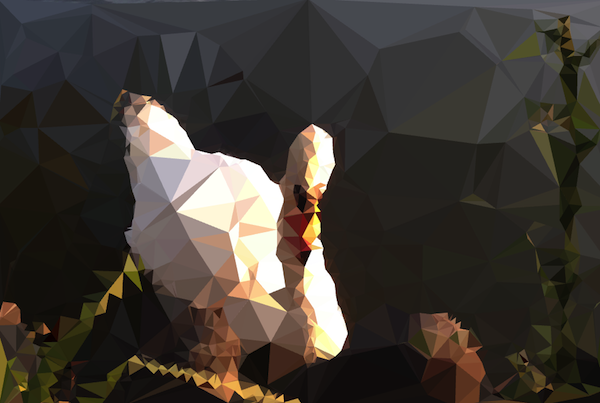

Swans are birds of the family Anatidae within the genus Cygnus. The swans' close relatives include the geese and ducks. Swans are grouped with the closely related geese in the subfamily Anserinae where they form the tribe Cygnini.
Sometimes, they are considered a distinct subfamily, Cygninae.There are six or seven species of swan in the genus Cygnus; in addition there is another species known as the coscoroba swan, although this species is no longer considered one of the true swans.Swans usually mate for life, though "divorce" does sometimes occur, particularly following nesting failure.
And if a mate dies, or is killed by a predator, the remaining mate will take up with another; however, if all goes well in the pairing, they indeed will stay together for life. The number of eggs in each clutch ranges from three to eight.